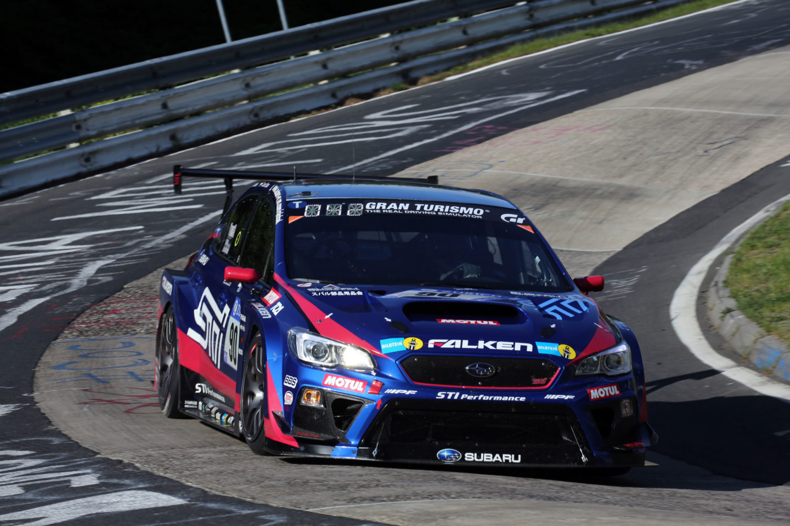
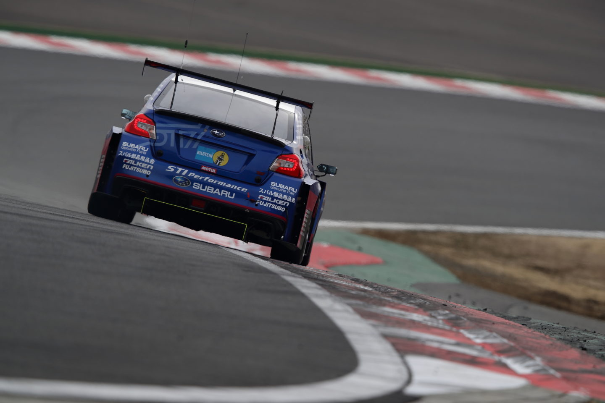

Descubre la historia del Subaru WRX STI
leyenda viva en rallies y circuitos
Conoces el trabajo de Subaru en la creación de vehículos únicos. Pero nuestros modelos no se limitan a dar su mejor versión en la calle. Por eso, en 1988 creamos Subaru Tecnica International, una división de Subaru Corporation dirigida a diseñar los Subaru de alto rendimiento. Desde entonces, la conocida como STI se especializó en la preparación de vehículos para el Subaru World Rally Team, ayudando a generar la identidad de Subaru como marca orientada al rendimiento. El primer modelo diseñado por nuestra división de alto rendimiento fue el Subaru Legacy RS RA, en 1989. Una berlina deportiva que logró alzarse con el World Speed Endurance Record de 100.000 kilómetros de la FIA. Algunos años más tarde, en 1992, se lanzó en el mercado japonés la versión mejorada y limitada a 200 unidades de este modelo, el Subaru Legacy GT Touring Wagon. Cuyas actualizaciones a nivel mecánico mejoraron considerablemente su rendimiento, y además sentaron las bases del que sería el modelo STI por excelencia: el Subaru

Precisamente en el 92 llegó al STI el primer Impreza, una primera generación con una destacable toma de aire en el capó que ha ganado espectacularidad con el paso de los años. Las siguientes revisiones se actualizaron para adaptarse a la época y a los avances tecnológicos, hasta que dos años más tarde se añadiría la denominación WRX para prescindir del nombre de Impreza. En 1994, hace ahora 25 años, de las entrañas de Subaru Tecnica Internacional surgió la primera generación del WRX STI, con la doble y difícil misión de ser la versión de altas prestaciones del Impreza y ganar el Campeonato del mundo de Rallies. Desde entonces, este mito ha conseguido impresionantes resultados, venciendo a los mayores constructores de automóviles del mundo y explotando al máximo las virtudes de las versiones de calle de Subaru cuyo bajo centro de gravedad, eficaz tracción, rigidez y fiabilidad, han sido la clave del éxito en el exigente mundo de la competición. En España existe desde un numeroso club de aficionados a las cuatro generaciones WRX STI y a los Subaru más deportivos. En marzo de 2018 en el Circuito del Jarama se dieron cita más de 100 Subarus entre ellos WRX STI de todas las generaciones y 250 personas Alba2020 que desafiaron las complicadas condiciones meteorológicas para disfrutar de sus máquinas en un entorno incomparable.

Subaru fue el primer fabricante japonés en ganar el WRC en tres ediciones, sumando tres títulos en la categoría de pilotos y 47 victorias en el mundial. La tercera generación del WRX STI, lanzada en el 2011, continuó la senda de las victorias en las 24 horas de Nürburgring en categoría SP 3T, donde ganó consecutivamente las ediciones de 2012 y 2013, mientras que la cuarta generación —que comparte un 70% de sus piezas con su versión de competición, acentuando todavía más su marcado carácter deportivo— ya acumula tres triunfos en el mítico Nordschleife (bucle norte) del Nürburgring en 2015, 2017 y 2018.